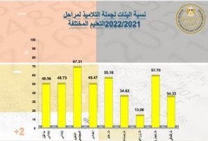

التسرب من التعليم

يعانى المجتمع المصرى من العديد من المشكلات التى تراكمت على مدار عقود طويلة، وفى مقدمتها مشكلات التعليم التى تتشابك مع قضايا اقتصادية واجتماعية وثقافية، وتتطلب ميزانيات ضخمة وخططا استراتيجية حازمة لإحداث نقلة نوعية فى جودة التعليم فى ظل عصر فائق السرعة فى تطوره وتعدد مجرياته.
وتعد مشكلة “التسرب من التعليم” من أخطر المشكلات التي تواجه العملية التعليمية فى مصر وتؤثر سلبا على بنية المجتمع وتقف عائقا أمام تقدمه نظرا لما يترتب عليها من استمرار للجهل وزيادة معدلات البطالة والفقر، وتعميق الممارسات الاجتماعية الخاطئة، وهدر لطاقات المجتمع المستقبلية والقضاء على أى عائد متوقع من خطط التنمية المستدامة.
وتطرح مشكلة التسرب من التعليم الكثير من التساؤلات التى يجيب عليها هذا التقرير التحليلى من خلال عدة محاور تتناول بشكل تفصيلي مفهوم التسرب من التعليم، وأبرز المؤشرات المتعلقة بالمشكلة فى مصر، وأسبابها وتداعياتها، إلى جانب جهود الدولة المصرية فى المواجهة، فضلا عن بعض المقترحات لحل مشكلة التسرب من التعليم.
المحور الأول : مفهوم التسرب من التعليم وأنواعه
عرفت اليونسيف التسرب من التعليم على أنه: “عدم التحاق الأطفال الذين هم بعمر التعليم بالمدرسة أو تركها دون إكمال المرحلة التعليمية التي يدرس بها بنجاح، سواء كان ذلك برغبتهم أو نتيجة لعوامل أخرى، وكذلك عدم المواظبة على الدوام لعام أو أكثر”.
ويعرف المُتسرب بحسب منظمة اليونسكو بأنه كل شخص لا يكمل دراسته ويترك مقاعد التعليم قبل إنهاء سنوات الدراسة.
أما المنظمة العربية للتربية والثقافة والعلوم فعرفت التسرب بأنه “صورة من صور الفقر التربوي في المجال التعليمي , وترك التلميذ الدارسة في إحدى مراحلها المختلفة”.
وتتخذ المشكلة إحدى هاتين الصورتين :
- عدم إلتحاق الطفل بالمدرسة منذ البداية واستمرار عزوفه عن الإلتحاق بها ، وكذلك عزوفه عن الرغبة فى التعليم خلال مراحل حياته المختلفة.
- انقطاع الطفل عن الحضور للمدرسة بصفة دائمة (سنة على الأقل ) بعد أن التحق بها ، وهذا يختلف عن مفهوم التغيب أو عدم الإنتظام .
وقد وضعت العديد من الدراسات سمات عامة للطلاب المتسربين من التعليم يمكن إجمالها فى الآتى :
- الأطفال ذوو القدرات العقلية المحدودة.
- الطلاب أصحاب الظروف الاقتصادية الصعبة.
- الأطفال الذين يعيشون فى أسر تعانى من التفكك الاجتماعى.
- الأطفال ذوو الكفاءة ولكن لديهم مشكلات مع مدرسيهم أو زملائهم.
- الأطفال ذوو السلوك الخاص نتيجة ظروف اجتماعية واقتصادية تدفعهم إلى العدوانية تجاه مدرسيهم وزملائهم.
المحور الثانى : مؤشرات متعلقة بمشكلة التسرب من التعليم فى مصر
بحسب البيانات والإحصاءات الأخيرة الصادرة عن وزارة التربية والتعليم والواردة فى كتاب الإحصاء السنوى 2021/2022، فإن هناك عددا من المؤشرات يمكن وضعها فى الاعتبار عند دراسة هذه الظاهرة والبحث عن أسبابها وتداعياتها يمكن إجمالها فى الآتى :
نسب المتسربين من التعليم:
بلغت نسبة المتسربين من التعليم في المرحلة الإبتدائية في الفترة من 2019/2020 و 2020 / 2021 حوالي 0.2% منهم 0.17% بنات و 0.23 % بنين، مقارنة بـ 0.25% منهم 0.20% للبنات، و0.29% للبنين فى الفترة من 2018/2019 و2019/2020 .
-
كثافة الفصول :
سجلت فصول المرحلة الإبتدائية أعلى متوسط لكثافة الطلاب فى عام 2021/2022 تليها فصول المرحلة الإعدادية، وذلك على الرغم من أن متوسط كثافة الفصول شهدت انخفاضا فى عام 2021/2022 مقارنة بعام 2020/2021، حيث سجلت كثافة الفصول فى مرحلة ماقبل الإبتدائي 29.77 طالب، مقارنة بـ32.02 طالب عام 2020/2021، وكثافة الفصول فى المرحلة الإبتدائية بلغت 51.56 طالب مقارنة بـ51.92 طالب فى عام 2020/2021، وفى المرحلة الإعدادية بلغت 47.53 طالب، مقارنة بـ48.01 طالب فى عام 2020/2021، كما يوضح الشكل التالي:
-
-
نسب القيد الصافى والإجمالي:
سجلت نسب القيد الصافي والإجمالي فى مرحلتي التعليم الإبتدائي والإعدادي لعام 2021/2022 زيادة مقارنة بالنسبة ذاتها عام 2020/2021، بينما تراجعت نسب القيد الإجمالي والصافي فى مرحلة ما قبل الإبتدائي.
بلغت نسبة القيد الإجمالى فى المرحلة الإبتدائية عام 2021/2022 نحو 107.3% مقابل 105.3% عام 2020/2021، وبلغت نسبة القيد الصافى عام 2021/2022 نحو 104.9% ، مقابل 103% عام 2020/2021.
بلغت نسبة القيد الإجمالى فى المرحلة الإعدادية عام 2021/2022 حوالي 104.1%، مقابل 99.4% عام 2020/2021، فى حين بلغت نسب القيد الصافي عام 2021/2022 نحو 94.9% ، مقابل 90.7% عام 2020/2021.
وتراجعت نسب القيد فى مرحلة ما قبل الإبتدائي حيث بلغت نسب القيد الإجمالى عام 2021/2022 نحو 22.4%، مقابل 24.2% عام 2020/2021، ونسب القيد الصافي 18.7% مقابل 20.6% عام 2020/2021.
-
نصيب المدرس من التلاميذ:
كان نصيب المدرس من التلاميذ فى المرحلة الإبتدائية الأعلى لعام 2021/2022 فى المرحلة الإبتدائية، حيث بلغ نحو 31.55 تلميذ لكل مدرس، تليها المرحلة الإعدادية حيث بلغ نحو 23.65 تلميذ لكل مدرس، بينما بلغ نصيب المدرس من التلاميذ فى مرحلة ما قبل الإبتدائي نحو 19.67 تلميذ لكل مدرس، كما هو موضح بالشكل التالي:
-
نسبة الممارسين للتدريس لغير الممارسين :
بحسب البيانات الأخيرة الصادرة عن وزارة التربية والتعليم بلغت أعلى نسبة للمدرسين غير الممارسين للتدريس فى مرحلة التعليم ما قبل الإبتدائى بواقع 4.02%، وذلك على الرغم من أن هذه النسبة شهدت انخفاضا طفيفا مقارنة بعام 2020/2021 حيث كانت 4.11%.
فى حين زادت نسبة المدرسين غير الممارسين للتدريس فى مرحلة الإبتدائي عام 2021/2022 وبلغت 1.85% بعدما كانت 1.83% عام 2020/2021، وفى المرحلة الإعدادية حيث بلغت 1.73% بينما سجلت 1.71% فى عام 2020/2021.
نسبة الممارسين للتدريس لغير الممارسين بمراحل التعليم 2021/2022

وبلغت نسبة المتسربين من التعليم في المرحلة الإعدادية في الفترة من 2019/2020 و 2020 / 2021 حوالى 0.87% منهم 1.10 % بنات و 0.66 % بنين، مقارنة بـ1.73% منهم 2.07% بنات، و1.40% بنين فى الفترة من 2018/2019 و2019/2020.

وهكذا يتضح تراجع معدلات التسرب من التعليم فى المرحلتين الإبتدائية والإعدادية. كما أن الأرقام تشير إلى أن البنين الأعلى تسربا من التعليم فى المرحلة الإبتدائية، بينما الفتيات الأعلى تسربا من التعليم فى المرحلة الإعدادية، الأمر الذى يعكس أوضاعا اجتماعية غاية فى الصعوبة ، إذا أنه فى مراحل سنوات الشهادة الإبتدائية تلجأ كثير من الأسر تحت ضغط العوز والحاجة الاقتصادية إلى تشغيل الأبناء من الذكور وترك التعليم حتى يتحول هؤلاء الأطفال إلى مصدر دخل للأسرة ، أما فى المرحلة الإعدادية فتلجأ أيضا كثير من الأسر الفقيرة إلى تزويج الفتيات مبكرا للتخلص من أعبائها الاقتصادية.
وعلى صعيد نسب التسرب من التعليم فى المحافظات، سجلت محافظة مطروح الأعلى فى نسب التسرب بالمرحلة الإبتدائية بين عامي 2020/2019 – 2020/2021 بواقع 0.39% ، تليها أسيوط بنسبة 0.36%، بينما كانت محافظة الوادى الجديد هى الأقل بواقع 0.02% ، تليها محافظة جنوب سيناء بواقع 0.05%.
وتؤكد هذه النسب ضرورة قيام الجهات المعنية بدراسة أسباب تسرب الطلاب من التعليم فى محافظة مرسى مطروح والتدخل بشكل فاعل للحد منها. وربما يعود انخفاض عدد الطلاب المتسربين من التعليم فى محافظتى الوادى الجديد وجنوب سيناء إلى انخفاض عدد السكان إجمالا فى هاتين المحافظتين.
بينما سجلت محافظة أسيوط الأعلى فى معدلات تسرب الطلاب من التعليم فى المرحلة الإعدادية بين عامي 2020/2019 – 2020/2021 بواقع 1.93%، تليها مطروح بنسبة 1.55%، بينما سجلت محافظة البحر الأحمر النسبة الأقل بواقع 0.16%.
وعلى صعيد المحافظات، فإن الإسكندرية الأعلى كثافة فى مرحلة رياض الأطفال بواقع 38.35 طالبا، والقليوبية فى مرحلة الإبتدائية بواقع 57.18 طالبا، تليها الجيزة بواقع 56.63 طالبا، ومرسى مطروح الأعلى فى مرحلة التعليم المجتمعي بواقع 59.15، والجيزة فى مرحلة التعليم الإعدادي بواقع 54.71 طالبا.
وتعكس هذه الأرقام نسب الكثافة المرتفعة بالفصول وهو ما يؤثر سلبا على التوافق المدرسي للمتعلم، ويؤدى به إلى التسرب من المدرسة، مما يستلزم ضرورة التوسع بشكل عاجل فى إنشاء المزيد من المدارس وفصول المراحل الابتدائية والإعدادية لإحداث خلخلة فى عدد الطلاب فى الفصول وتمكين المدرسين من إيصال رسالتهم العلمية بشكل أفضل، الأمر الذى يقلل تباعا من نسب التسرب من التعليم.
ومقارنة بنصيب المدرس من التلاميذ عام 2020/2021، شهد انخفاضا فى مرحلة ما قبل الإبتدائى حيث كان 21.18 تلميذ لكل مدرس، بينما شهد ارتفاعا فى مرحلة الإبتدائي حيث بلغ 30.23 تلميذ لكل مدرس، وفى مرحلة الإعدادي بلغ 21.97 تلميذ لكل مدرس.
وتعكس هذه البيانات مؤشرا خطيرا وهو زيادة الاستعانة بنسب المدرسين غير الممارسين للتدريس خاصة فى مرحلة ما قبل الإبتدائي والتى تتطلب التعامل مع الأطفال من قبل متخصصين ، فهذه المرحلة يتم فيها بناء شخصية الطفل وتحديد اتجاهاته نحو التعليم ، وتعامل غير المتخصصين مع الأطفال فى هذا السن قد ينعكس سلبا على الأطفال ويفقدهم كل رغبة فى استكمال تعليمهم . يأتى ذلك بالتزامن مع وجود مدرسين غير مؤهلين للتواصل مع الطلاب وأولياء أمورهم، وهو ما قد يشعر الطالب بغربة وبعدم التفاهم مع أساتذتهم.
المحور الثالث : أسباب تفاقم ظاهرة التسرب من التعليم
تتشابك وتتعدد الأسباب التى تؤدى إلى تفاقم ظاهرة التسرب من التعليم إلا أنه يمكن إجمالها كما يلي:
العوامل الاقتصادية : يُعد العامل الاقتصادى المسئول الأول عن زيادة أعداد المتسربين من التعليم ، فقصور الإمكانيات الاقتصادية عن الوفاء بمتطلبات الحياة يدفع بأولياء الأمور إلى عدم استكمال مشوار الأبناء التعليمي، والاستفادة منهم اقتصاديا عن طريق تشغيلهم واستغلالهم كمصدر دخل. كما قد تلجأ بعض الأسر إلى تزويج فتياتها مبكرا من أجل التخلص من أعبائها المعيشية أو تشغيل هذه الفتيات فى المنازل من أجل زيادة دخل الأسرة ، وفى كل الأحوال كلما زادت معدلات الفقر تزداد معها فرص تسرب الأطفال من التعليم.
-
العوامل الاجتماعية : يُقصد بها الظروف والأحوال التى تتصل بأسرة التلميذ وبيئته المحلية، والقيم التى تسود المجتمع وتؤدى إلى عدم مواصلة التلميذ للتعليم وأهمها
التفكك الأسرى وانفصال الوالدين حيث يؤدى ذلك فى كثير من الأحيان إلى زيادة معدل تسرب الأبناء من التعليم فى ظل مواجهة الأبناء لظروف نفسية واجتماعية صعبة قد يستحيل معها الانتظام فى التعليم .
العادات الاجتماعية القديمة قد تُسهم فى زيادة نسب التسرب من التعليم كتفضيل تعليم الذكور عن الإناث ، أو زواج الفتيات مبكرا ، أو إجبار الفتيات على ترك التعليم خوفا عليهن من التعامل مع الآخرين وغير ذلك من العادات والتقاليد التى تنتشر بشكل خاص فى قرى ومحافظات الريف والصعيد.
مستوى تعليم الوالدين ومهنتهما: من الأسباب الهامة التي تؤدي إلى الإهدار والتسرب من المدارس، فإدراك الوالدين لقيمة التعليم وأهميته يعتمد على مستواهم الثقافي والتربوي. كما تلعب مهنة الوالدين دورا هاما في تسرب أبنائهم، حيث أشارت الدراسات إلى أن أبناء العاملين بالزراعة والحرف لا يكملون تعليمهم كما هو الحال في أبناء العاملين في التجارة والوظائف والمهن العليا.
-
العوامل التربوية: منها ما يتعلق بالنظام التعليمي فقلة إمكانياته المادية والبشرية تتسبب فى عدم قدرته على تحقيق أهدافه المطلوبة، وبالتالي يؤدي إلى ارتفاع نسبة التسرب في التعليم. ومنها ما يتعلق بالمناهج الدراسية التى لا تراعي ميول واهتمامات الطلاب ويصعب على الأطفال خاصة محدودى الذكاء والقدرات العقلية التعامل معها، ومن ثم شعورهم بعدم التكافؤ مع أقرانهم مما يجعلهم لا يقبلون على التعلم ويميلون للتسرب منه.
هذا فضلا عن أن الكثافة العالية للفصول تؤثر سلبا على العملية التعليمية فلا تعطى للمتعلم فرصة الحصول على تعليم جيد وممارسة الأنشطة المدرسية التى دائما ما تجعل الطلاب يقدمون على الدراسة ولا تسمح للمعلم بالاهتمام وتدريس كل التلاميذ واحتواء ميولهم. كما أن قلة الاهتمام ببرامج الرعاية النفسية والاجتماعية للتلاميذ مع ارتفاع أعداد الطلاب قد يدفع الكثير منهم إلى الغياب وعدم الرغبة من استكمال التعليم.
ومع نقص أعداد المعلمين، أصبحت وزارة التربية والتعليم تلجأ إلى تعيين المدرسين غير الممارسين لمهنة التعليم، مما قد يعكس عدم قدرتهم على استيعاب احتياجات الطلاب، وهو ما انعكس سلبا على الحالة النفسية لكثير من الطلاب وأدى الى تركهم للتعليم بشكل عام .
أدى أيضا النقص الشديد فى أعداد المدارس والفصول إلى لجوء وزارة التربية والتعليم إلى أن يكون اليوم الدراسى مقسما إلى فترتين أو أكثر ، وبالطبع الفترة المسائية يتم خلالها تقليص اليوم الدراسى ويضعف المستوى التعليمى مع غياب كامل للأنشطة الدراسية .
بلغت نسبة توزيع الفصول للعام الدراسى الحالى فى الفترة المسائية 6.02% ، والفصول التى تعمل لفترتين 7.01% أما الفصول التى تعمل ليوم كامل فبلغت نسبتها 39.48% والفصول التى تعمل فقط للفترات الصباحية 47.48%، كما هو موضح فى الشكل التالي:
نسبة توزيع الفصول حسب الفترات الدراسية 2021 / 2022
نسبة توزيع المدارس حسب الفترات الدراسية 2021 / 2022
وتؤكد هذه النسب على أهمية زيادة عدد المدارس والفصول التعليمية ووضع ذلك فى مقدمة أولويات وزارة التربية والتعليم.
المحور الرابع : تداعيات ظاهرة التسرب من التعليم
تُعد ظاهرة التسرب من التعليم واتجاه أعداد من التلاميذ والطلاب إلى الشارع أو مجالات العمل المختلفة، من المشكلات الاجتماعية والاقتصادية التى لايقتصر تأثيرها على الطالب وحسب، بل يمتد إلى المجتمع بأسره وتعرقل كل جهود الإصلاح والتنمية، ومن ثم تتعدد تداعيات هذه الظاهرة لتشمل عدة جوانب يمكن إجمالها فى الآتى :
-
تداعيات اقتصادية : يتمثل هذا التأثير فى الهدر الاقتصادى للدولة والذى تنفقه على تعليم المتسربين دون تساوى المخرجات مع الإنفاق ، وقد تقوم الدولة بإعادة تعليمهم مرة أخرة من خلال برامج محو الأمية وهو ما يُشكل هدرا اقتصاديا وتربويا كبيرا.
كما أن المتسربين من التعليم يمكن اعتبارهم قوة اقتصادية معطلة غير قادرة على التعامل مع وسائل الإنتاج الحديثة وجزء كبير منهم يعانى من البطالة وهو أيضا هدر اقتصادى من نوع آخر.
-
تداعيات تربوية : يعوق التسرب من التعليم الأهداف التى يرمى إليها النظام التعليمي من إصلاح وتغيير اجتماعي مرغوب فيه لدى الأفراد، فوظيفة التربية لا تقتصر على نقل التراث الثقافي بل تتعداه إلى إحداث تغيرات واتجاهات مقصودة اجتماعيا وسياسيا واقتصاديا وفكريا.
وعادة ما يعانى المتسربين من التعليم من الأمية لسنوات طويلة وهو ما يؤثر سلبا على شخصياتهم ويسبب عدم نضوجها أو اكتمال جوانبها ، ويؤدى أيضا إلى عدم إدراكهم لأهمية تعليم أبنائهم وهو ما يجعلنا أمام دائرة مفرغة من الأمية ، خاصة فيما يتعلق بتعليم الفتيات وهن المسئولات عن الأجيال المستقبلية، فقد أشارت نتائج كثير من الأبحاث إلى أن الأمهات غير المتعلمات تكون احتمالية أمية أبنائهن أكبر من نظيراتهن من الأمهات المتعلمات.
-
تداعيات اجتماعية : تتسبب ظاهرة التسرب من التعليم فى انتشار سلوكيات اجتماعية خطيرة كالانحراف والسرقة والاعتداء على الممتلكات وارتكاب الجرائم وأعمال العنف. هذا إلى جانب عدم اكتسابهم للحد الأدنى للمواطنة والقيم والأخلاق والاتجاهات التى لا غنى عنها فى ضبط السلوك، فضلا عن تعرضهم لمشاكل صحية بدنية ونفسية أكبر من أقرانهم من المتعلمين تعوق قدرتهم على التكيف الاجتماعي بشكل عام.
يؤثر أيضا عدم استكمال التعليم على شخصية الأفراد ويجعلها هشة يسهُل استقطابها وإقناعها بأى اتجاهات مغرضة سواء اقتصادية أو اجتماعية أو سياسية .
كما يؤدي التسرب من التعليم إلى استمرار انتشار الجهل وسيطرة العادات والتقاليد والأفكار المغلوطة التى تحد من تطور المجتمع وتحقيق النمو المنشود.
المحور الخامس : جهود الدولة المصرية فى مواجهة ظاهرة التسرب من التعليم
إيمانا من أن بناء الإنسان هو أساس بناء دولة قوية عنوانها التقدم والتطور، تسعى الدولة المصرية جاهدة لتطوير العملية التعليمية ومواجهة معوقاتها، والتى من أبرزها ظاهرة التسرب المدرسي التى تُشكل أكبر عائق للتخلص من الأمية، وتتضح جهود الدولة التشريعية والتنفيذية فى هذا الملف كما يلي:
-
دستور 2014 : تُوسع المادة 19 في دستور 2014 من الحق في التعليم المجاني المذكور في الدساتير السابقة، حيث تنص على أن التعليم حق لكل مواطن، هدفه بناء الشخصية المصرية، والحفاظ على الهوية الوطنية، وغرس قيم المواطنة والتسامح وعدم التمييز، وتلتزم الدولة “بتخصيص نسبة من الإنفاق الحكومي للتعليم لا تقل عن 4% من الناتج القومي الإجمالي، تتصاعد تدريجيا حتى تتفق مع المعدلات العالمية وتشرف الدولة عليه لضمان التزام جميع المدارس والمعاهد العامة والخاصة بالسياسات التعليمية لها”.
كما حرص الدستور كذلك على رعاية حقوق المعلمين وتطوير مهاراتهم ، فقد نص فى المادة 22 على أن : ” المعلمون، وأعضاء هيئة التدريس ومعاونوهم، الركيزة الأساسية للتعليم، تكفل الدولة تنمية كفاءتهم العلمية، ومهاراتهم المهنية، ورعاية حقوقهم المادية والأدبية، بما يضمن جودة التعليم وتحقيق أهدافه”.
-
استراتيجية التنمية المستدامة 2030 (محور التعليم) : وضعت استراتيجية التنمية المستدامة محورا كاملا لتطوير التعليم يرتكز هدفه الرئيسى على أن “يكون التعليم بجودة عالية متاحا للجميع دون تمييز كفء وعادل ، يساهم فى بناء شخصية متكاملة لمواطن يعتز بذاته ومستنير ومبدع ومسئول ويحترم الإختلاف وفخور بوطنه وقادر على التعامل التنافسى مع الكيانات اقليميا وعالميا “.
وقد وضعت هذه الاستراتيجية عددا من الأهداف الفرعية التفصيلية الكفيلة بتحقيق الهدف الرئيسى.
-
وضع خطة استراتيجية لإعلان مصر خالية من الأمية بحلول عام 2030: حيث كثفت الدولة جهودها في المناطق التي بها نسبة كثافة سكانية عالية ضمن مبادرة “حياة كريمة”.
-
وضع استراتيجية لمعالجة مشكلات التسرب من التعليم من قبل الهيئة العامة لتعليم الكبار: وتعتمد فى تنفيذها على 6 محاور ، يتضمن المحور الأول استراتيجية الثواب والعقاب وتيسير انتقال الطلاب من مرحلة إلى أخرى ووضع التشريعات التعليمية لخفض معدلات التسرب، واستخدام مؤشرات الإنذار المبكر للتسرب من التعليم، والمحور الثاني هو الاستراتيجيات الشخصية أو الوجدانية، ويشمل تقديم البرامج الإرشادية الفردية والمشاركة الوالدية واستراتيجية تشكيل فريق لرد ظاهرة التسرب، ومساعدة الطلاب.
ويشمل المحور الثالث الخاص بالاستراتيجيات المرتبطة بالبرامج المستهدفة، استراتيجية إنشاء مراكز إعادة التواصل مع الطلاب المتسربين، واستراتيجية الحد من هروب الطلاب من المدرسة، أما الثلاث محاور الأخيرة فهي استراتيجية المدارس البديلة وتشمل ضمنها استراتيجية المدارس الاختيارية والمدارس الرقمية والافتراضية، والمحور الخامس هو استراتيجية المشاركة المجتمعية، وتشمل استراتيجية تعميق مفهوم المشاركة المجتمعية واستراتيجية تكامل الجهود بين وزارات الدولة، والمحور السادس خاص بالاستراتيجيات المرتبطة بالممارسات التعليمية والمرونة في أساليب التعلم.
-
منصة إلكترونية لتعليم الكبار عن بُعد أنشأتها الهيئة العامة لتعليم الكبار خلال جائحة كورونا: باستخدام بعض التطبيقات التكنولوجية المختلفة وأتاحتها للدارسين، بالإضافة إلى تنظيم محو الأمية عبر الإنترنت للمناطق الريفية بمحافظات الجمهورية.
-
التوسع في بناء المدارس الحكومية: بهدف خفض كثافة الفصول حيث وصلت فى مرحلة الإبتدائي إلى نحو 17.078 فى عام 2021/2022، بينما كانت 16.350 فى عام 2017/2018. كما زاد عددها فى المرحلة الإعدادية وبلغ نحو 11.127 فى عام 2021/2022 مقابل 10.160 فى عام 2017/2018، كما هو موضح فى الشكل التالي وفقا لبيانات وزارة التربية والتعليم:
-
التوسع فى أعداد مدارس التعليم المجتمعى على مستوى الجمهورية: حيث بلغ عدد مدارس التعليم المجتمعى فى مصر عام 2021/2022 نحو 4.912 مدرسة ، وتضاعت أعداد التلاميذ الملتحقين بها عام 2021/2022 حيث بلغ نحو 140.224، مقابل 136.272 عام 2020/2021، و106.781 عام 2014/2015، كما يوضح الشكلين الآتيين:
شكلت الفتيات النسبة الأكبر فى الالتحاق بمدارس التعليم المجتمعى بواقع 67.31% تليها نسبتهم فى مدارس الثانوى التجارى بواقع 57.70% ثم الثانوى العام بواقع 55.18% كما يوضح الشكل التالي:

كانت نسبة الفتيات الملتحقات بمدارس التعليم المجتمعى فى الريف هى الأعلى بواقع 69.65% أما فى الحضر فبلغت نسبة الفتيات 56.5%، كما هو موضح فى الشكل التالي:
وتعد مدارس التعليم المجتمعى هى طوق النجاة للطلاب المتسربين من التعليم خاصة فى المناطق الأكثر عوزا والنائية وفى ريف وقرى الصعيد، والتوسع فى إنشائها يعكس اهتمام الدولة وإدراكها لعواقب قضية التسرب من التعليم والعمل بشكل حاد على إيجاد حلول لها قابلة للتنفيذ كما أنها تعكس المسئولية الإجتماعية لمؤسسات المجتمع المدنى والتى تقوم بإنشاء عدد كبير من هذه المدارس.
المحور السادس : مقترحات لمواجهة مشكلة التسرب من التعليم
لا شك فى أن الدولة المصرية بذلت جهودا حقيقية ومخلصة فى سبيل تطوير المنظومة التعليمية وعلاج مشكلة التسرب من التعليم بشكل خاص ، ولكن يُمكن بذل المزيد من الجهود لمواجهة هذه الظاهرة من خلال اتخاذ الإجراءات التالية:
- تقديم كافة أشكال الدعم المادي والعيني لمساعدة الأسر الفقيرة وغير القادرة في تعليم أبنائهم، وإلغاء قرار ربط تحصيل المصروفات الدراسية باستلام الكتب المدرسية ، فقد أسهم هذا القرار في زيادة نسب التسرب من التعليم السنوات الماضية .
- السماح للطلبة المتسربين من التعليم بالالتحاق بالدراسة بغض النظر عن سنهم.
- دعم مشاركة منظمات المجتمع المدني والقطاع الخاص في المنظومة التعليمية خاصة فيما يتعلق بزيادة عدد الفصول والمدارس، ومساعدة الأسر الأكثر احتياجا في تحمل أعباء وتكاليف تعليم الأبناء.
- وضع القوانين والتدابير الممكنة التى تسهم فى إعفاء القطاع الخاص ومؤسسات المجتمع المدنى من الضرائب أو جزء منها على الأموال التى تقدمها لدعم نظم التعليم فى مصر .
- الاهتمام بشكل كبير بالأنشطة التعليمية ، فهى أحد أهم العوامل التى تزيد من شعورالطلاب بالانتماء للمدرسة، كما أنها تعمل على تنمية مهاراتهم وقدراتهم على الإبتكار والتفكير والإبداع .
- التأهيل التربوى للمعلمين للتعامـل مـع الطلاب والاضطرابات التعليمية ومعالجـة القضايـا السـلوكية فــي المــدارس، وذلك عن طرق الاهتمام ببرامـج تأهيل المعلمين فــي الكليات والجامعات.
- إعادة تكليف الطلاب خريجى كليات التربية للعمل فى وزارة التربية والتعليم فور تخرجهم بهدف زيادة أعداد المدرسين المؤهلين.
- زيادة نسبة دعم التعليم من الميزانية العامة للدولة بما يساعد فى زيادة عدد المدارس والفصول وتحسين الأوضاع المادية للمدرسين.
- إصدار التشريعات والقوانين التى يمكن أن تحفز الأسر على إلحاق الأبناء بالتعليم – خاصة الفتيات – حتى انتهاء مراحل التعليم الأساسية ، ويمكن فى هذا الإطار منح هذه الأسر دعما استثنائيا حتى انتهاء مراحل تعليم الأبناء.
- تشكيل لجنة من الجهات المعنية بالتعليم فى مصر بالتعاون مع وزارة التربية والتعليم تهدف الى متابعة الطلاب المتسربين من التعليم والبحث عن أسباب هذا التسرب والعمل على علاجه.
- زيادة الحوافز والتسهيلات المقدمة من الدولة لمؤسسات المجتمع المدنى من أجل إقامة المزيد من المدارس المجتمعية ومدارس الفصل الواحد لمواجهة الأعداد المتسربة من التعليم .
- تدشين إدارة خاصة فى كل مؤسسة تعليمية تكون مهمتها متابعة انتظام الطلاب وتقديم تقرير أسبوعى وشهرى للوزارة للكشف مبكرا عن الطلبة المتسربين من التعليم مع التواصل الدائم مع أولياء الأمور ومعالجة المشكلات التى تواجه هؤلاء الطلاب وأسرهم.
- زيادة أعداد الأخصائيين الاجتماعيين والنفسيين بالمدارس بهدف التعرف على مشكلات الطلاب وعلاجها خاصة تلك التى تؤدى إلى تسرب الأطفال من التعليم والعمل على علاجها.
- إعادة تفعيل دور مجالس الأباء والأمناء فى المدارس مع العمل على ابتكار أساليب متنوعة لتقديم كافة أوجه المساعدة والدعم المالى للأسر الأكثر احتياجا والتى قد تلجأ فى المستقبل الى تشغيل الأبناء وترك الدراسة.
- إنشاء صندوق تكافل من خلال أجهزة وزارة التربية والتعليم على أن يتم تمويله من تبرعات رجال الأعمال والبنوك ومؤسسات العمل الخيرى والمجتمع المدنى المعنية بهدف تقديم الدعم المالى للأسر محدودة الدخل خاصة تلك التى عجزت عن تحمل تكاليف تعليم أبنائهم.
- إنشاء ” المركز القومى لعلاج التسرب من التعليم ” بهدف وضع كافة الحلول والخطط التى تمنع تفاقم هذه الظاهرة.
- وضع خطة إعلامية قومية للتوعية بأهمية التعليم ومحاربة التسرب منه وتداعيات ذلك على الفرد والأسرة والمجتمع.